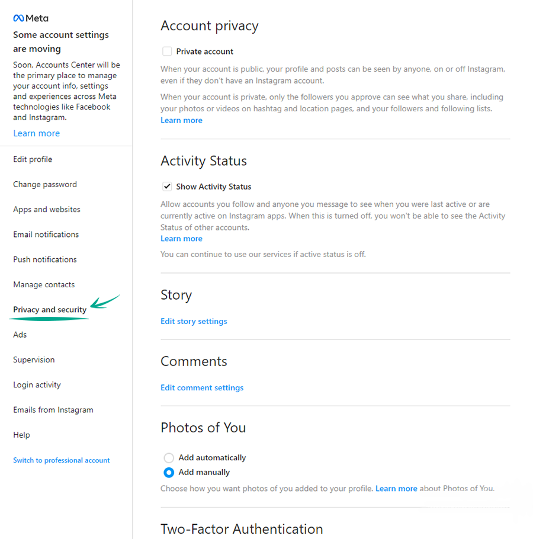
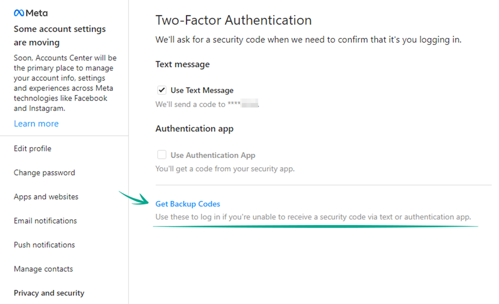

How to keep your account from getting hacked
-- Set a strong password
What for: So you don't get hacked.
If you are using a short and simple password for your Instagram account, cybercriminals can guess it and hijack your account.
A long and complex password is more secure. Use a strong password that:
- Is at least 8 and up to 20 characters long;
- Contains lowercase and uppercase letters, numbers, and special characters ($, @, etc.);
- Is not an actual word or easy-to-guess phrase;
- Is not the same as your passwords for any other accounts;
- Does not consist of information that strangers could easily find out (your name, date of birth, pet's name, and so forth — or those of your friends or relatives).
To change your password:
- Click More in the lower left corner of the screen;
- Select Settings;
- Enter your current password and print a new one twice;
- Click Change password.
-- Enable two-factor authentication
What for: So you definitely don't get hacked.
Instagram can prompt you to enter an additional one-time code when you log in to the account.
Even if cybercriminals find out your login and password, they will not be able to use them without this code.
The code can be received via a text message or using an authentication app.
Keep in mind that Instagram can use the phone number you specified for one-time codes for its own purposes, for example to show you targeted ads.
To enable two-factor authentication based on your phone number:
- Click More in the lower left corner of the screen;
- Select Settings;
- Select the Privacy and Security tab; 
- In the Two-Factor Authentication section, click Edit Two-Factor Authentication Setting;
- Select Use Text Message to receive the verification code by text message;
- Select Turn On in the dialog that opens;
- Check the phone number used to receive the text message, edit it and click Next, if appropriate;
- Enter the confirmation code you receive by text message and click Ready.
In order not to lose your account in case you lose your phone number, save the backup codes:
- On the same page, click Get Backup Codes;
- Instagram opens a page with five backup recovery codes. Every code can be used only once. Write them down or take a screenshot of them, and keep this information in a safe place. 
-- How to defeat spammers and trolls
- Limit the ability to comment on your posts
- Hide offensive and unpleasant comments and messages
- Block unwanted users